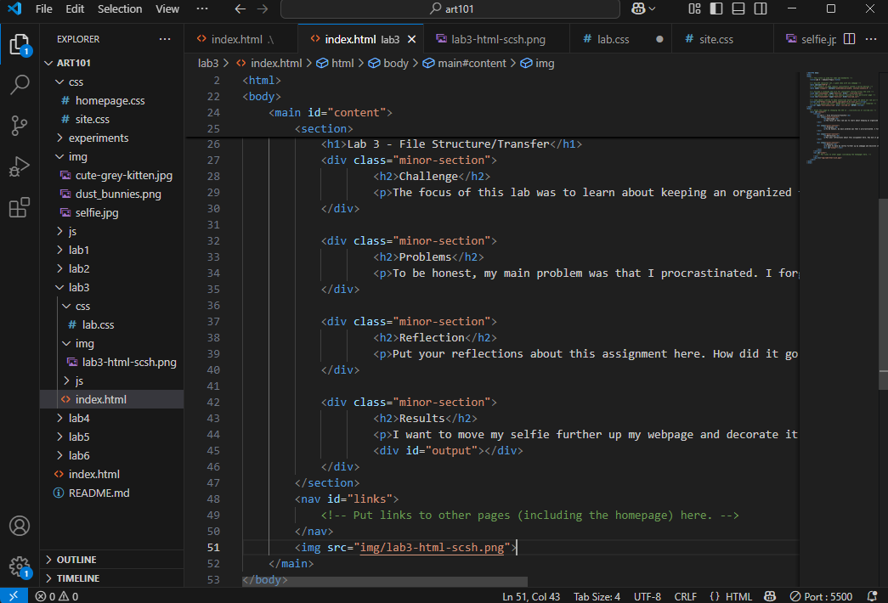

Lab 3 - File Structure/Transfer
Challenge
The focus of this lab was to learn about keeping an organized file structure.
Problems
To be honest, my main problem was that I procrastinated. I forgot there would be two labs this week.
Reflection
Put your reflections about this assignment here. How did it go? What kind of energy did you put into the assignment?
Results
I want to move my selfie further up my webpage and decorate it more so it fits in better, but I'm happy with how things are going so far.
First index.html screenshot.
Second index.html screenshot.